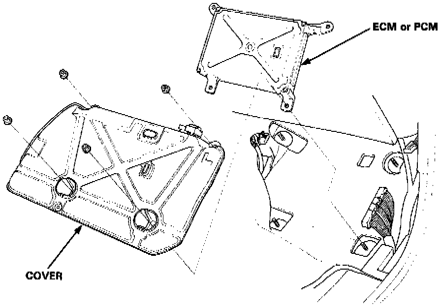
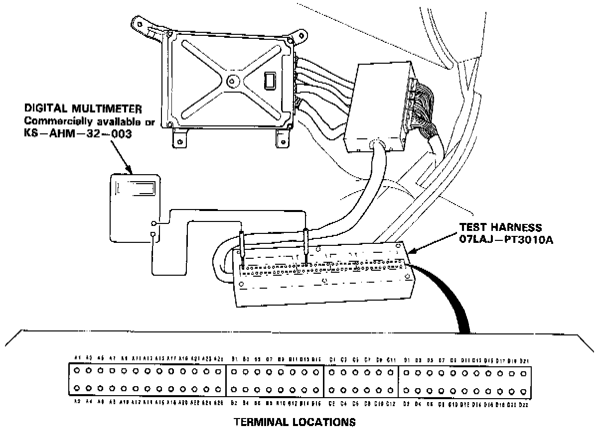
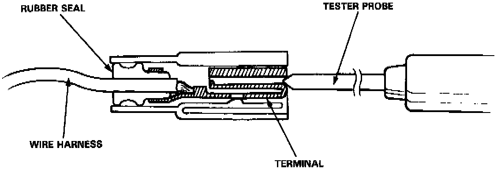

Component Tests and General Diagnostics
ECM/PCM TEST HARNESS INSTALLATION PROCEDURE
If the inspection for a particular code requires the test harness, remove the right door sill molding and the small cover on the right kick panel and pull the carpet back to expose the ECM or PCM (Powertrain Control Module).

Unbolt the cover. Then disconnect the connector from the radiator fan control unit and connect the test harness.

CAUTION:
- Puncturing the insulation on a wire can cause poor or intermittent electrical connections.
- For testing at connectors other than the test harness, bring the tester probe into contact with the terminal from the connector side of wire harness connectors in the engine compartment. For female connectors, just touch lightly with the tester probe and do not insert the probe.